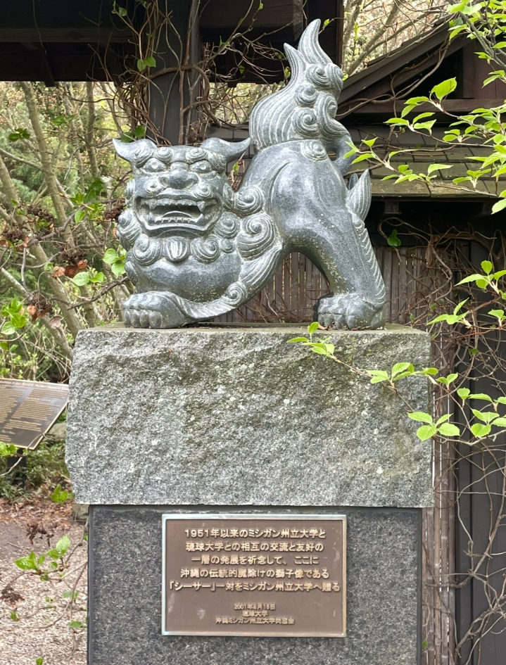

My Blog
My Current Activities
By Lance Lionquist - 09/25/2025
Academics
My schedule this semester has been unbelievably intense, as I have been scrambling to figure out what exactly I want my future to look like once I graduate from MSU - something which should happen in May 2026 unless something goes horrendously wrong. I am a part-time student, taking three classes, one representing each of my fields of study: MI349, representing information science, EC340 - a requirement for my international relations major, and HST212, representing my history minor. I enjoy MI349 and HST212, but EC340 is an absurdly difficult class - economics is not my strong suit. I am also considering applying to graduate school, as I am not confident about the job market, but I am unsure what exactly to specialize in. Hopefully I will figure that out soon.
Work
I currently work three jobs. The first, and most relevant job to my information science studies, is my job with the Learning Development Team at MSU, where I assist in creating educational materials and managing online resources. I also work as an event assistant at the MSU Horticulture Gardens, where I set up event spaces and assist with customer service. This job is seasonal; my last shift for the year will be this Saturday. I also work with the Visiting International Professional Program, in which I assist with a variety of university programs catered to international scholars and professionals. Over the summer, I worked with a group of German students, though in October I will work with a group of Korean professionals which may entail me going on work trips to both Northern Michigan and Chicago.

A lion statue at the MSU Horticulture Gardens, which was a gift from the University of the Ryukyus in Okinawa, Japan.
A Day in the Life
By Lance Lionquist - 09/23/2025
The Beginning
Today I woke up at around 10AM , after spending a long day yesterday working at with the Learning Development Team and later spending time at home doing nothing productive. I woke up and showered, but by the time my first class was about to start, an intense storm started. Although I love the ambience and find it relaxing, it isn't ideal when you need to get to class without getting struck by lightning.

A copyright-free photo of a storm far more intense than the one I encountered today.
MI349
Fortunately, the storm passed, and I was able to make it to my next class. As I wrote this, I was currently in class for MI349, working on a HTML coding assignment intended to teach me some of the basic building blocks of this particular language. It was actually quite fun figuring out how everything worked.
I needed to make a basic file, describing a day in my life - the one in which you are reading now, which included several HTML elements. Here is a table describing the elements which I was required to utilize in this file.
| Element |
Function |
Fact |
| h1 |
Defines the main heading of a page. |
Best practices require the use of just one H1 heading per page. |
| h2 |
Defines a secondary heading of a page. |
It is often used to begin a hierarchy of headings. |
| p |
Defines a paragraph. |
An essential tool in making pages readable and visually appealing. |
| header |
Defines a header for a document or section. |
Typically contains introductory content or navigation links. |
| section |
Defines a section in a document. |
Is often used to group related content together. |
| ul |
Defines an unordered list. |
In HTML, unordered lists utilize bullet points. |
| ol |
Defines an ordered list. |
In HTML, ordered lists utilize numbers or letters. |
| a |
Defines a hyperlink. |
These are a necessary tool in building coherent websites with several pages. |
| em |
Italicizes text. |
This is a very useful tool in placing emphasis on something. |
| strong |
Boldfaces text. |
This is a very useful tool in placing a strong emphasis on something. |
After Class
After class, I biked home and relaxed for a little while at home - though not for long as I had some fun plans with a few friends that night. A week prior, one of my friends had a chance encounter with a poster advertising a weekly trivia night at the Jolly Pumpkin on Tuesdays, which sounded like a fun way to unwind, test my knowledge, and spend time with friends. We ended up getting last place - there were a lot of questions about movies which isn't really my area of expertise - but I didn't really care as I had a fun time regardless.